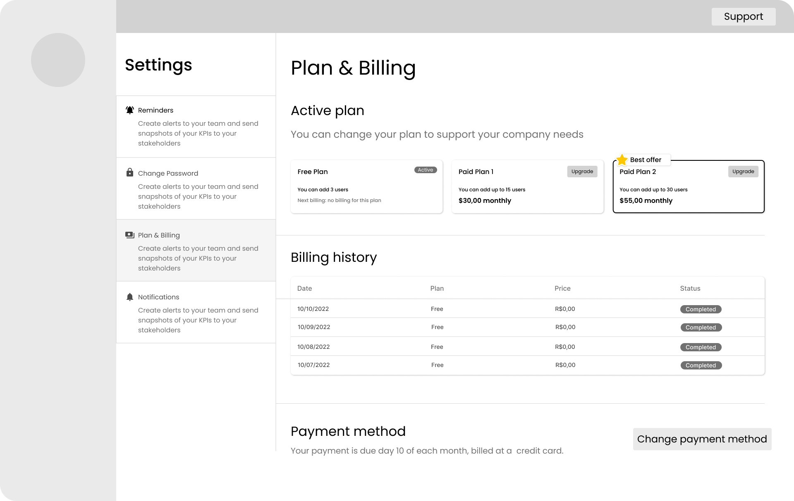
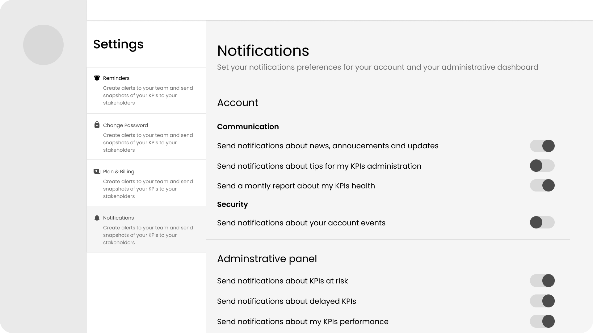
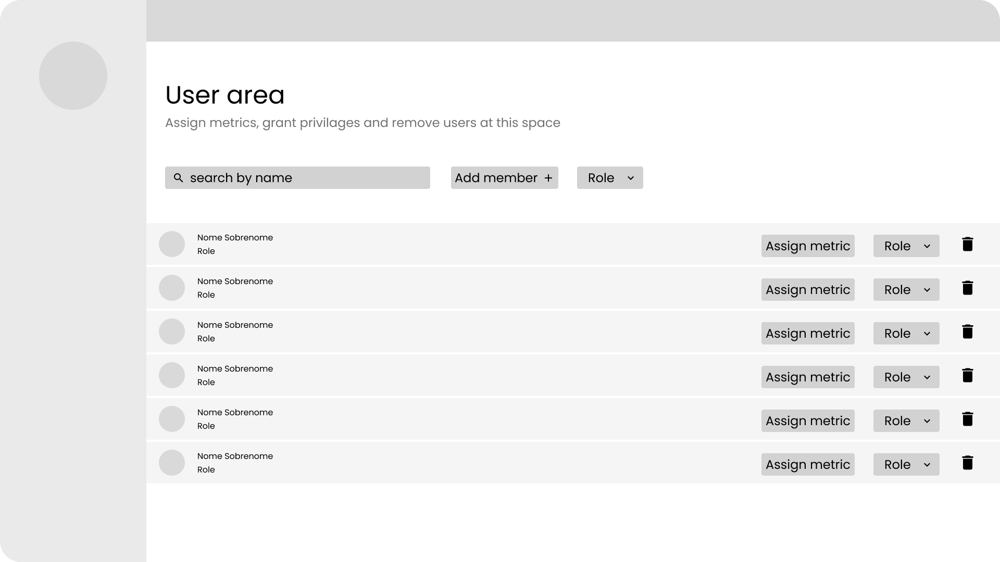
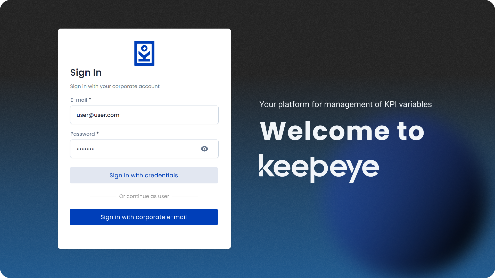
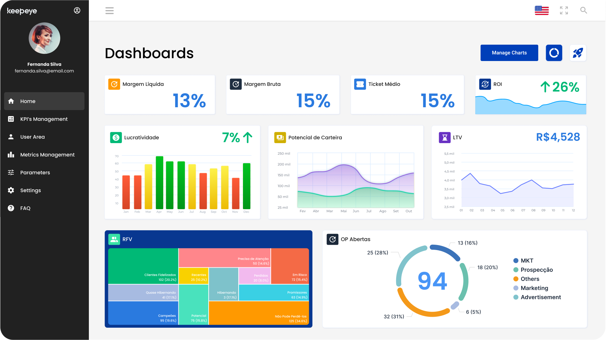
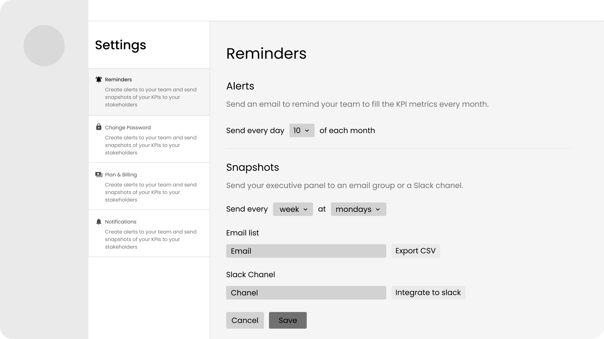

Keepeye: Plataforma de Gestão de KPIs
A Dojo sempre construiu software para outras empresas, o Keepeye foi a primeira vez que construímos um produto nosso. Atuei em design e front-end em uma equipe de quatro pessoas, levando um SaaS de gestão de KPIs da pesquisa competitiva até uma interface testada e pronta para produção.
Visão Geral
O trabalho da Dojo sempre foi voltado a projetos para clientes. O Keepeye mudou isso: uma ferramenta de gestão de KPIs de propriedade interna para gestores e equipes, construída de um conceito inicial até um produto SaaS pronto para o mercado. Atuei como UX designer e desenvolvedora front-end em uma equipe de quatro pessoas, eu, outra UX engineer e dois desenvolvedores full-stack.
O Problema
Já tínhamos construído algo parecido antes, mas apenas como um projeto pontual para um único cliente, escopado para as necessidades dele, não desenhado para um mercado. Transformar isso em um produto de verdade significava enfrentar perguntas que aquele projeto nunca havia nos forçado a responder: quem mais realmente precisa disso, o que as ferramentas já existentes no mercado faziam bem, e quais lacunas de usabilidade do nosso próprio conceito simplesmente nunca haviam aparecido porque só uma empresa o havia usado.
Pesquisa e Discovery
Antes de redesenhar qualquer coisa, liderei uma análise competitiva das ferramentas de acompanhamento de KPIs já existentes (incluindo sua participação de mercado no Brasil), para entender o que o mercado já resolvia bem e onde o Keepeye poderia se diferenciar.
Também tratei nossa versão anterior como material de pesquisa: entrevistas e testes de usabilidade com gestores de múltiplas indústrias, focados em como eles acompanhavam KPIs no dia a dia. Um padrão consistente surgiu, a maioria das empresas tinha apenas uma noção superficial de acompanhamento de KPIs e precisava de bastante suporte para começar, o que nos mostrou quanto onboarding e orientação o próprio produto precisaria carregar.
Cada problema de usabilidade e ideia de melhoria que surgiu entrou em uma matriz RICE (Reach, Impact, Confidence, Effort), para que a equipe pudesse priorizar o backlog por pontuação, não por opinião.

Design Iterativo
Com as prioridades definidas, mapeei a arquitetura de informação, como a informação fluiria, como os usuários se moveriam entre páginas, e quais funcionalidades entrariam no MVP versus uma versão futura.
A partir daí, protótipos de média fidelidade cobriram as principais telas de conta: lembretes, plano e cobrança, notificações e gestão de usuários/papéis, fidelidade suficiente para confirmar o conteúdo de cada página e alinhar com a equipe de desenvolvimento antes de travar qualquer design visual.




Depois que essa estrutura foi validada, desenhei as telas de alta fidelidade (login, dashboard de KPIs, gestão de métricas e configurações), adicionando cor, tipografia, textos, estados de erro e detalhes de interação.





Em paralelo, construí uma biblioteca de componentes reutilizáveis em vez de telas avulsas, com documentação cobrindo o uso e as particularidades de cada componente, trabalhar presencialmente com a equipe tornou esse processo rápido, e deixou algo que o time pôde continuar construindo depois do handoff.
Testes e Solução
Com todas as páginas codificadas, testamos o MVP seguindo um roteiro escrito, em vez de uma navegação livre: uma jornada de usuário planejada e dividida em tarefas específicas, aplicada com usuários reais, com um questionário curto após cada tarefa.
O teste foi desenhado para responder perguntas específicas (o produto era intuitivo, a interface era atraente, e onde exatamente as pessoas se confundiam), além de perguntas finais sobre consistência, mecanismos de feedback, estética, acessibilidade e segurança.
Essa estrutura significou que entregamos um MVP construído para um ciclo real de feedback, não apenas uma checagem única: o mesmo roteiro e as mesmas métricas poderiam ser reaplicados conforme o produto evoluísse.
Impacto e Aprendizados
- A primeira versão se manteve alinhada às métricas que havíamos estabelecido para o teste de usabilidade, com apenas ajustes pequenos necessários depois e satisfação dos usuários consistentemente alta.
- Por ser nosso primeiro MVP, investimos além da conta em polimento antes de validar, um erro de timing que vale nomear: quanto mais cedo um produto chega a usuários reais, mais barata fica cada correção de rota.
- Trabalhar de perto com outra UI/UX designer, depois de anos projetando sozinha, se mostrou uma das partes mais valiosas do projeto, uma segunda perspectiva para discutir, tomar emprestada e trocar feedback em tempo real.
Principal aprendizado: A diferença entre “funciona para um cliente” e “funciona como produto” foi exatamente a lacuna que este projeto fechou. A pesquisa competitiva nos mostrou onde o mercado já estava; as descobertas de usabilidade pontuadas pela RICE em múltiplas indústrias nos mostraram quais correções realmente importavam. Sem os dois, teríamos continuado a polir uma ferramenta construída para uma audiência de uma pessoa só.